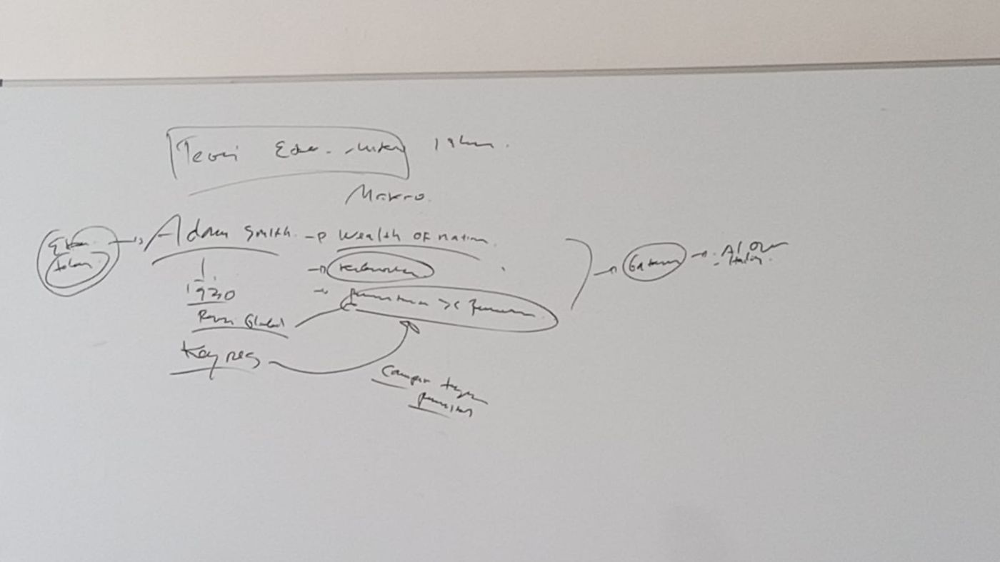

Modul 0 · Materi Kuliah
Pengertian Teori Ekonomi Mikro Islam
Sebelum masuk ke kurva dan model, satu pertanyaan harus dijawab lebih dulu: apa sebenarnya yang membuat sebuah kajian ekonomi disebut Islam? Jawabannya tidak terletak pada objeknya, melainkan pada landasan dan tujuannya.
Kompilasi seluruh materi perkuliahan: 11 bab, glosarium 40 istilah, daftar pustaka, dan lampiran dokumentasi.
Menempatkan Ekonomi Mikro Islam dalam Peta Ilmu Ekonomi
Ilmu ekonomi terbagi menjadi dua cabang besar. Ekonomi mikro melihat perekonomian dari dekat — satu rumah tangga yang memilih beras jenis apa, satu pedagang yang menentukan harga jual, satu perusahaan yang memutuskan berapa tenaga kerja direkrut. Ekonomi makro melihatnya dari jauh — inflasi seluruh negeri, pertumbuhan nasional, pengangguran, neraca pembayaran.
Perumpamaannya: ekonomi mikro memeriksa pohon satu per satu, ekonomi makro memandang hutan secara keseluruhan. Keduanya diperlukan, dan kekeliruan memahami perilaku pohon akan berujung pada kekeliruan memahami hutan.
| Aspek | Ekonomi Mikro | Ekonomi Makro |
|---|---|---|
| Unit analisis | Individu, rumah tangga, perusahaan | Perekonomian secara keseluruhan |
| Contoh persoalan | Mengapa harga cabai naik menjelang hari raya? | Mengapa inflasi nasional meningkat? |
| Variabel utama | Harga barang tertentu, output perusahaan, upah pekerja | Tingkat harga umum, PDB, pengangguran, nilai tukar |
| Alat analisis | Kurva permintaan–penawaran, kurva indiferensi, kurva biaya | Pendapatan nasional, kebijakan fiskal dan moneter |
| Pertanyaan pokok | Bagaimana sumber daya dialokasikan? | Bagaimana perekonomian tumbuh dan stabil? |
Alur Historis: dari Adam Smith ke Al-Qur'an dan Hadis
Catatan perkuliahan menempatkan pembahasan ini dalam alur sejarah yang penting dipahami sejak awal.

- Adam Smith lewat The Wealth of Nations (1776) meletakkan dasar ilmu ekonomi modern, dengan kelangkaan sebagai persoalan pokok dan mekanisme pasar bebas sebagai gagasan utamanya.
- Resesi Global 1930 (Depresi Besar) menjadi anomali yang tidak dapat dijelaskan mazhab klasik. Pasar yang menurut teori seharusnya menyesuaikan diri sendiri ternyata gagal; pengangguran bertahan tinggi bertahun-tahun.
- John Maynard Keynes menawarkan penjelasan baru dengan menekankan permintaan agregat berhadapan dengan penawaran, serta membenarkan campur tangan pemerintah untuk memulihkan perekonomian.
- Ekonomi Islam berdiri dengan acuan yang berbeda secara mendasar, yaitu Al-Qur'an dan Hadis. Ia tidak lahir sebagai reaksi atas kegagalan pasar semata, melainkan berangkat dari pandangan-dunia tersendiri tentang manusia, harta, dan tujuan hidup.
Mengapa alur ini penting
Pertama, ilmu ekonomi konvensional pun tidak pernah statis — ia berulang kali mengoreksi diri ketika berhadapan dengan kenyataan. Kedua, ekonomi Islam bukan sekadar varian dari mazhab yang sudah ada, melainkan bangunan yang berdiri di atas sumber pengetahuan yang berbeda. Perbedaan sumber inilah yang melahirkan perbedaan tujuan, konsep manusia, dan ukuran keberhasilan.
Definisi Menurut Para Ahli
| Tokoh | Rumusan | Titik tekan |
|---|---|---|
| M. Umer Chapra | Cabang ilmu yang membantu mewujudkan kesejahteraan manusia melalui alokasi dan distribusi sumber daya langka sesuai maqashid syariah, tanpa menghilangkan kebebasan individu secara berlebihan maupun mengganggu keseimbangan sosial dan lingkungan. | Tiga syarat sekaligus: maqashid, kebebasan, keseimbangan — menolak kutub kapitalisme maupun sosialisme |
| Muhammad Abdul Mannan | Ilmu pengetahuan sosial yang mempelajari persoalan ekonomi masyarakat yang diilhami nilai-nilai Islam. | Tetap ilmu sosial dengan perangkat metodologisnya, bukan cabang fikih |
| Monzer Kahf | Kajian aktivitas ekonomi pada tingkat mikro maupun makro yang beroperasi berdasarkan prinsip-prinsip Islam. | Pemisahan mikro–makro bersifat metodologis, bukan hakiki |
| Adiwarman A. Karim | Ilmu yang mempelajari perilaku individu dalam konsumsi, produksi, distribusi, dan pertukaran berdasarkan Al-Qur'an, Sunnah, ijma', dan qiyas sehingga seluruh aktivitas ekonomi bernilai ibadah. | Paling operasional: menyebut empat wilayah kajian dan empat sumber hukum |
Rumusan simpulan
Teori Ekonomi Mikro Islam adalah cabang ilmu ekonomi Islam yang mempelajari perilaku individu, rumah tangga, perusahaan, serta interaksi pasar dalam kegiatan konsumsi, produksi, distribusi, dan pertukaran berdasarkan prinsip-prinsip syariah untuk mewujudkan keadilan, kemaslahatan (maslahah), dan kesejahteraan (falah).
Landasan utamanya berasal dari Al-Qur'an, As-Sunnah, Ijma', dan Qiyas, kemudian dikembangkan melalui ijtihad ulama dan ekonom Muslim modern. Karena itu teori ini tidak hanya bersifat positif (menjelaskan fenomena ekonomi), tetapi juga normatif (memberi pedoman bagaimana aktivitas ekonomi seharusnya dilakukan).
Empat Unsur Kunci dalam Definisi
| Unsur | Isi | Konsekuensi bagi kajian |
|---|---|---|
| Objek | Perilaku individu, rumah tangga, perusahaan, dan pasar | Sama dengan ekonomi mikro konvensional — di sinilah perangkat analisis konvensional tetap dapat dipakai |
| Wilayah | Konsumsi, produksi, distribusi, pertukaran | Distribusi mendapat porsi lebih besar dibanding ekonomi konvensional yang menyerahkannya pada pasar |
| Landasan | Prinsip syariah dari Al-Qur'an, Sunnah, ijma', qiyas | Ada batas halal–haram yang mendahului pertimbangan efisiensi |
| Tujuan | Keadilan, maslahah, dan falah | Ukuran keberhasilan tidak dapat direduksi menjadi angka utilitas atau laba |
Perbedaan dengan ekonomi konvensional tidak terletak pada objeknya, melainkan pada landasan dan tujuannya.
Kedudukannya sebagai Ilmu
Apakah ekonomi mikro Islam benar-benar sebuah ilmu, ataukah sekadar seperangkat ajaran moral tentang ekonomi? Ditimbang dengan syarat keilmuan yang lazim, ia memenuhinya: objeknya jelas, tersusun sistematis, bermetode, menghasilkan proposisi yang dapat diperiksa, dan terbuka pada kritik.
Yang perlu dijaga adalah kejernihan memilah jenis pernyataan. Kematangan seorang peneliti tampak dari kemampuannya membedakan ketiganya dan tidak mencampuradukkan cara menilainya — klaim empiris tidak dijawab hanya dengan dalil, dan ketentuan wahyu tidak gugur karena data statistik.
| Jenis proposisi | Contoh | Sumber | Cara menilainya |
|---|---|---|---|
| Normatif | Riba diharamkan; zakat wajib ditunaikan | Al-Qur'an dan Sunnah | Diterima sebagai postulat; tidak diuji empiris |
| Positif | Bagi hasil lebih stabil menghadapi krisis | Teori dan data empiris | Diuji dengan data; dapat digugurkan bukti |
| Turunan (ijtihad) | Bunga bank termasuk riba | Qiyas dan ijtihad ulama | Diperdebatkan dengan argumen usul fikih |
Rujukan Utama
Ekonomi Mikro Islami
Adiwarman A. Karim — Jakarta: Rajawali Pers, 2015.
The Future of Economics: An Islamic Perspective
M. Umer Chapra — Leicester: The Islamic Foundation, 2000.
Ekonomi Mikro Islam
Bank Indonesia, Departemen Ekonomi dan Keuangan Syariah, 2024.
Pengantar Ekonomika Mikro Islami
M. B. Hendrie Anto — Yogyakarta: Ekonisia, 2003.